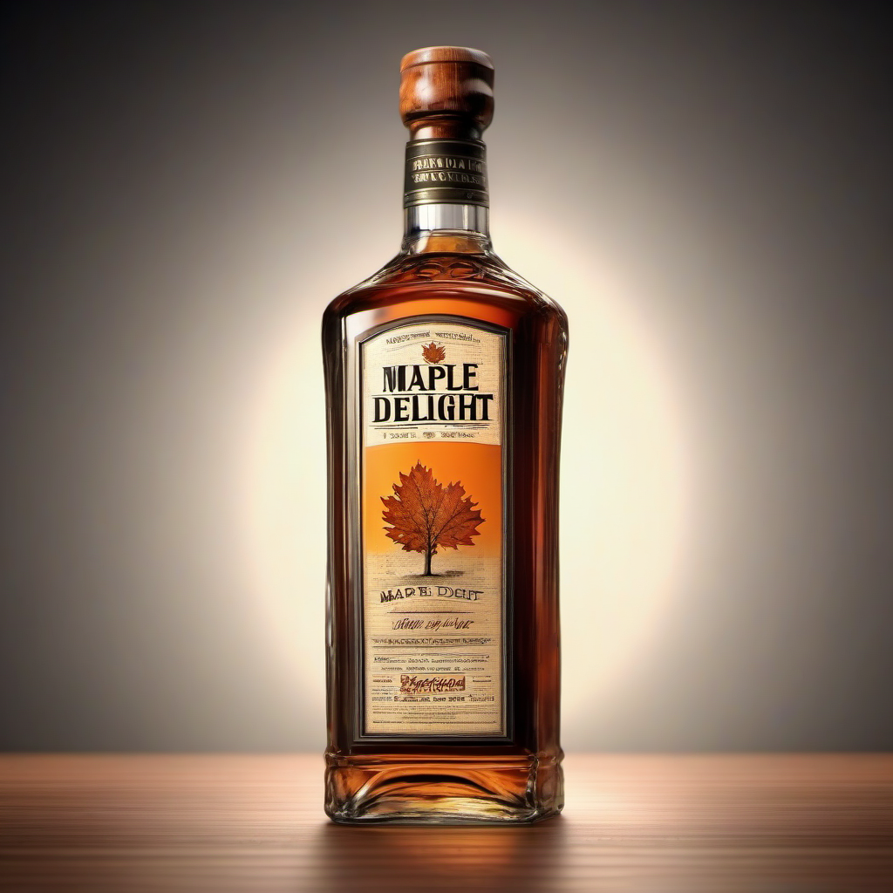
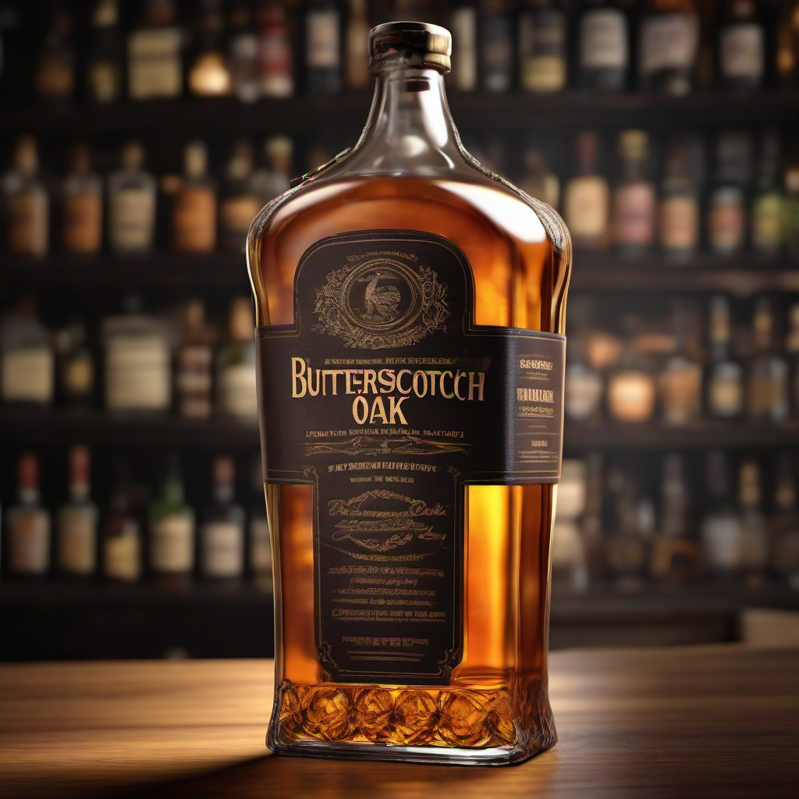

Discover the rich & smooth taste of our Amber Essence Whisky.
Indulge in the captivating allure of our 'Single Malt Amber Essence Whisky.' Crafted with meticulous attention to detail,
this exceptional whisky embodies the essence of sophistication and refinement.
Our master distillers have carefully selected the finest malted barley, which is expertly distilled and aged to perfection.
The result is a harmonious symphony of flavors, where the rich and smooth texture of the single malt meets the warm embrace of amber hues.
With each sip, you'll experience a journey through layers of complexity. The initial notes dance on your palate, revealing a delightful medley of honeyed sweetness and delicate floral undertones.
As the whisky lingers, the oaken depth emerges, offering a gentle reminder of the casks that cradled it for years.
Whether enjoyed neat or with a drop of pure water to unlock its hidden nuances, our 'Single Malt Amber Essence Whisky' promises a sensory exploration that's truly unmatched. It's not just a drink;
it's a testament to the artistry and passion we pour into every bottle.
Elevate your moments with a dram of this exquisite whisky and let its amber essence transport you to a world of taste and elegance
LKR.35000.00

Maple Oak Delight :
Discover the sweet, woody & slightly smoky taste of our Maple Oak Delight Whisky.
Introducing our exquisite creation: Maple Oak Delight. Crafted with meticulous care, this unique whiskey embodies the perfect harmony of nature's finest elements.
Bask in the comforting embrace of velvety smooth whiskey, masterfully infused with the enchanting essence of pure maple syrup. As you savor each sip, a symphony of flavors unfolds.
The warmth of aged oak gently mingles with the rich sweetness of maple, creating a dance of indulgence on your palate.
Whether enjoyed neat, over ice, or as the heart of a captivating cocktail, Maple Oak Delight promises an experience like no other.
It's a journey that encapsulates the comforting nostalgia of a leisurely Sunday morning,
combined with the timeless allure of a well-crafted spirit.
Join us in savoring the symphony of flavors, as nature's bounty meets the craftsmanship of seasoned distillers.
Maple Oak Delight - where every sip tells a tale of flavor, finesse, and the pursuit of palate perfection.
LKR.30000.00

Butterscotch Oak Delight :
Discover the sweet,slightly smoky taste of our Butterscotch Oak Delight Whisky.
Indulge in the velvety allure of Butterscotch Oak Whiskey, a delightfully smooth and flavorful fusion that captures the essence of both sweetness and sophistication.
With each sip, you're greeted by a symphony of flavors that dance across your palate.
Imagine the rich, buttery notes of classic butterscotch, seamlessly woven into the warmth of meticulously crafted whiskey.
This harmonious blend creates an inviting experience that lingers, inviting you to explore the depths of its complexity.
Butterscotch Whiskey is a testament to the art of balance. The whiskey's foundation, steeped in tradition, offers a backdrop of oak and caramel undertones that provide depth and character.
Meanwhile, the infusion of butterscotch elevates the experience, adding a layer of creamy sweetness that's both comforting and decadent
Join us in raising a glass to Butterscotch Whiskey - a masterpiece of flavor innovation that bridges the gap between tradition and temptation.
Cheers to a sensory journey that redefines the boundaries of taste and elegance.